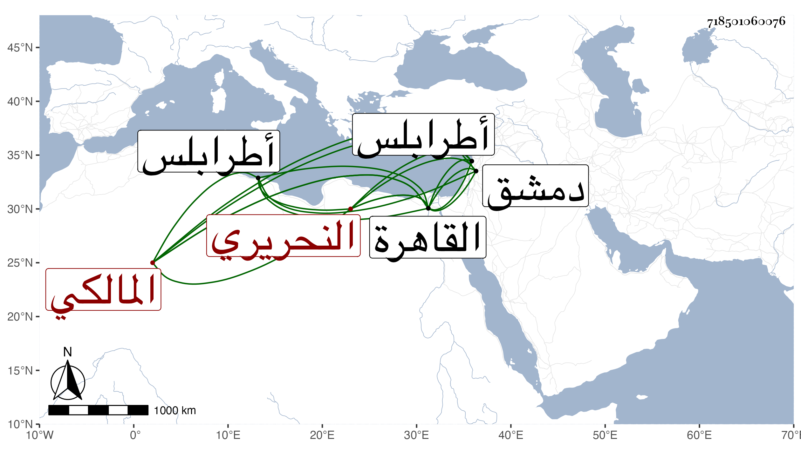

0902Sakhawi.DawLamic.ITO20230111-ara1.EIS1600.718501060076
Biography ID: 718501060076
أحمد بن عبد الله الشهاب النحريري المالكي . قدم القاهرة وهو فقير جدا واشتغل وأقرأ الناس في العربية ثم ولي قضاء طرابلس وامتحن من منطاش بالضرب بالمقارع والسجن بدمشق فلما فر منطاش رجع إلى القاهرة وقد تمول فسعى إلى أن ولي قضاء المالكية في المحرم سنة أربع وتسعين بعد موت الشمس محمد الركراكي فلم تحمد سيرته بل كان كما قيل :
| لقد كشف الأثراء عنه خلائقا | من اللؤم كانت تحت ثوب من الفقر |
فصرف في ذي القعدة منها وكذا كان بيده نظر وقف الصالح تلقاه عن العماد الكركي في رجب سنة تسع وتسعين ولم تحمد سيرته فيه أيضا مات معزولا في يوم الخميس ثاني عشر رجب سنة ثلاث . ذكره شيخنا في أنبائه وقال في رفع الأصر وحط عليه المقريزي في عقوده .
